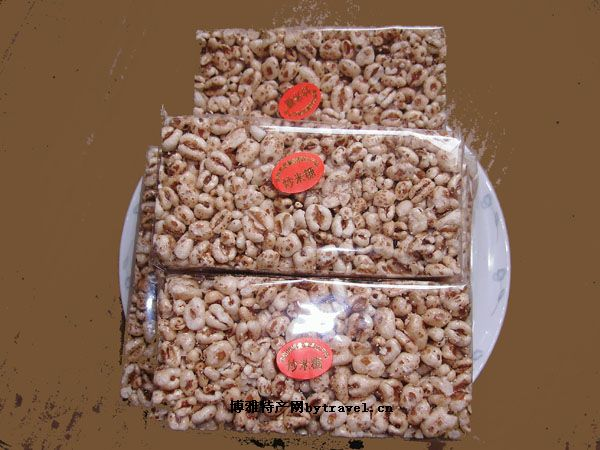
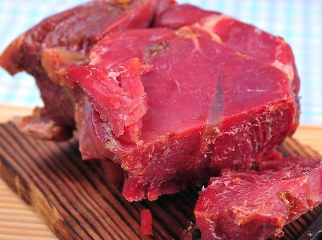

炒米糖
炒米糖黄中带亮，颗粒均匀，状如蜂蛹、软硬适中、香甜酥脆。其传统制作方法如下： 1、选料。选用颗粒大、粘性大、无杂质的糯米，筛去碎米后，用清水泡浸一 夜。 2、拌糖笼蒸。把泡浸的糯米取出，漏干，置竹箕上，倒进适量的米糖，充分拌匀，置蒸笼中，以文火蒸，待米熟透即取出,晾干 3、碓臼熟米。把筛去米糠、各自分散、略带弹性的熟米，拌以花生油适量，堆放12小时后，分批用碓臼，臼时要不断把底部熟米翻到上面，直至熟米全被全臼扁为止。 4、爆米花。先把备好的匀砂适量，倒进铁镬中，以猛火炒红，再放入适量扁熟米混炒，待全部爆成米花后，取出，再继续放入扁熟米。 5、熬煮糖油，用黄糖或白糖均可，按米花的重量投放适量的糖，加水，放进一些姜块，以慢火熬制，浓缩，待糖油几次泛起白泡，用筷子能粘起糖油，滴入冷水中凝成球状为最佳浓度。 6、成型。先在竹箕内堆放好米花，迅速把已煮好的糖油浇进堆中，接着以最快的速度把米花与糖油拌匀，以竹筒或他物压平，待散温凝固，用刀切成小块，移放瓦钵(或铁箱)中，密封保藏。 解放后的70年代至80年代，按照传统工艺制作的米花糖逐年减少。因为这种制作工艺复杂，现在有一种爆米机能把传统炒米糖的浸米、笼蒸、臼扁米、爆米花的工艺并为一次，爆出米花体积大，粘米可代替糯米，但没有传统炒米糖那种干香酥脆的独特风味。逢年过节，走亲访友必备良品。

张飞牛肉
张飞牛肉产于四川省阆中市，张飞牛肉在清代乾隆年间就远近驰名，已有二百年历史。民国时期在成都“劝业会”上曾被评为“上等食品”，自此声誉更佳。亦曾在40年代获得成都工业协会优质产品银奖，名扬川内外。张飞牛肉分生、熟两种： 张飞牛肉 选用精肉切成五百克左右方块、去掉边筋板韧，用咸味香料浸渍，用力反复揉搓，务将血污、水份挤尽，使肉质疏松，再加香入缸，密封腌制.出缸后，用“百草霜”（也就是锅烟灰）反复抹于肉表，烈火煮熟，沸水起锅，即为熟干牛肉。 生干牛肉又称风干牛肉，系选用牛腿肥厚筋肉制成.在冬季加工，用咸味香料抹揉，入缸加压腌制，然后出缸用古柏烟熏，至色泽金黄，始以微风吹拂，至七、八成干时，再加香料入缸密封，以待食用。制作流程: 1,把牛肉切成1斤左右的块状. 2,在其表面涂抹盐和花椒.盐的份量一定要足,不然肉会腐败. 3,把牛肉找个盆装起来,等其盐份慢慢渗透进去.至少需等一星期. 4,把吃透盐份的牛肉吊起自然风干,风干约需一星期. 5,准备足够燃烧1小时的柏树枝,把树枝点燃,并手动控制火焰大小,使火焰保持在将熄未熄的状态,此时柏树枝会释放出大量的浓烟及高温.将风干的牛肉挂在这堆柏树枝的上面烘大约一小时,牛肉即变黑. 6,把烘好的牛肉再次挂起风干一天,待烟气敞尽,即成。张飞牛肉是特制作而成的肉制品，味道鲜嫩香醇，而且咬一口下去牛肉的肉质紧致有嚼劲和咬劲，吃起来口感的风味特别的美好而又独特，除了口感和风味特别美好之外，这种牛肉还含有非常丰富的营养价值，能够为人体提供丰富的蛋白质和其他的一些营养物质。亦是南充人春节餐桌上一道必不可少的佳肴，用来款待亲友，置办宴席都是上等佳肴。